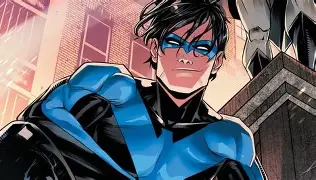
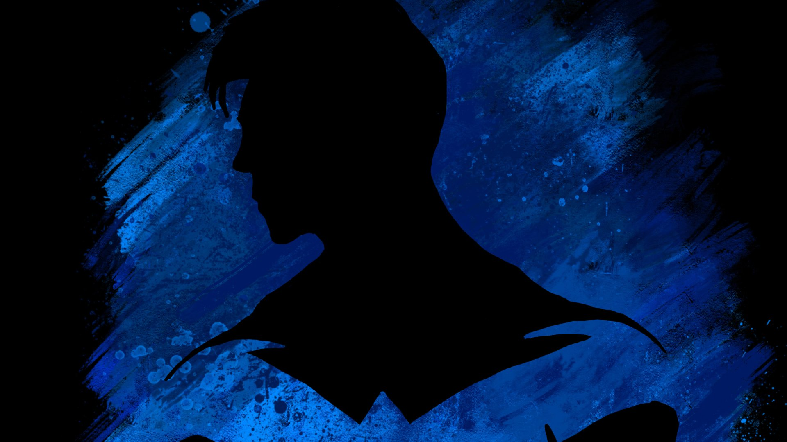
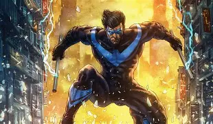
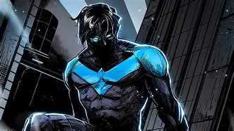
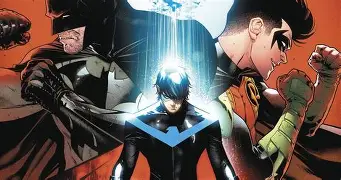
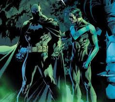

1° - É verdade que o Asa noturna é substituto oficial do Morcego ?

Após cerca de 3 anos sem atualizações sobre o cavaleiro das trevas, ele foi avistado
pelos telhados de Arkham já debilitado por conta da idade, portanto ainda não temos
um veredito final
portanto tudo indica que sim eles está deixando seu trono para o seu braço direito
Para saber mais acesse o link : Clique aqui
2° - Quem é o Asa Noturna ?

Asa Noturna é o herói conhecido como Dick Grayson, o primeiro Robin. Após deixar a sombra do Batman, ele cria sua própria identidade e passa a atuar principalmente em Blüdhaven, protegendo a cidade com agilidade,
inteligência e um forte senso de justiça. Diferente de Batman, o Asa Noturna
lidera com empatia e trabalho em equipe, sendo um dos maiores símbolos de esperança do universo DC.
Se precisar dele URGENTE só entrar no link : Clique aqui
3° - Gotham está segura ?

Com Batman já idoso e afastado das ruas, Asa Noturna foi visto atuando em Gotham City, assumindo um papel decisivo na segurança da cidade.
Testemunhas relatam que o herói interveio em conflitos próximos ao centro urbano, área antes protegida
pelo Cavaleiro das Trevas. A presença do Asa Noturna reforça a ideia de que, mesmo com a lenda de Gotham enfraquecida pelo tempo,
a cidade não está desamparada.
Oque aconteceu com o Batman ? : Clique aqui
4° - Oque está acontecendo em Gotham ?

Durante a madrugada, moradores de Gotham relataram uma série de quedas simultâneas em pontos estratégicos do submundo criminoso. Câmeras de segurança captaram apenas sombras em movimento e um símbolo azul
deixado para trás, suficiente para espalhar pânico entre gangues locais. A polícia confirmou prisões ligadas a tráfico e contrabando, mas evitou comentar sobre a possível participação de um vigilante. Nas ruas, o comentário é um só: alguém está
observando Gotham de cima — e não pretende parar.
Veja também, quem ganha ? Asa Noturna ou Robin ? : Clique aqui